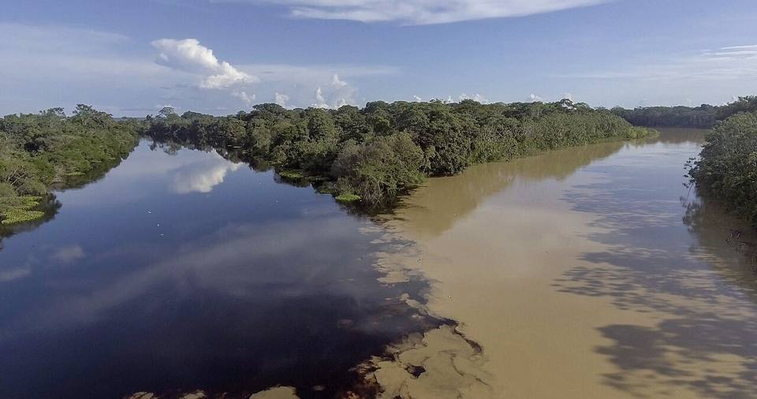
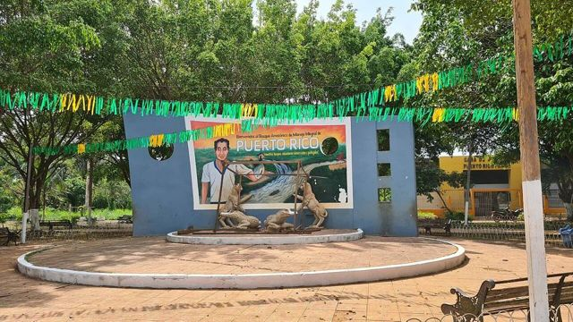
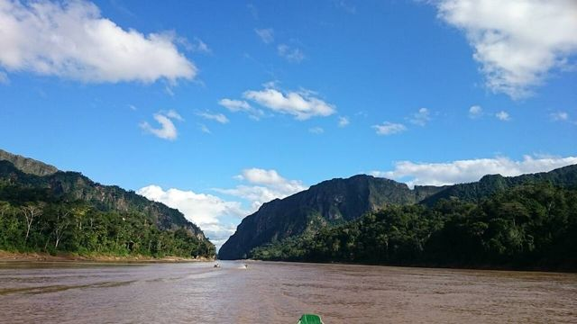

Puerto Rico and the Manuripi reserve
Pando Department · Jungle and tropics

Puerto Rico is a small Pando town where the Manuripi river joins the Tahuamanu. It's the gateway to the Manuripi reserve: lakes, Brazil-nut forest and remarkable wildlife. In June, a big sport-fishing championship takes place at the confluence.
200 maltitude
2 to 3 daysto spend there
Things to do
- Manuripi Amazon reserve
- Where the Manuripi meets the Tahuamanu
- Fishing championship in June
What to eat
- River fishSurubí, pacú or dorado, grilled over a wood fire or fried, with rice, cassava and plantain. Delicious by the water, in the Llanos and the Amazon.
- MasacoMashed plantain or cassava with charque or cheese. Rich and filling.
Tip. 3 to 4 h from Cobija by road. Arrange the reserve visit in advance.
How to get to Puerto Rico
Cobija Road (bus, car) · 3 to 4 h
Bus or shared taxi from Cobija.
Partly unpaved road.
Photos of Puerto Rico and the Manuripi reserve


More places in this region

RurrenabaqueGateway to the Bolivian Amazon, on the Beni river. Madidi National ParkOne of the most biodiverse places on the planet. Primary forest.
Madidi National ParkOne of the most biodiverse places on the planet. Primary forest. Yacuma PampasWetlands teeming with animals: caimans, capybaras and pink river dolphins.
Yacuma PampasWetlands teeming with animals: caimans, capybaras and pink river dolphins. Barba Azul reserveBeni savannas, refuge of the blue-throated macaw, one of the rarest parrots in the world.
Barba Azul reserveBeni savannas, refuge of the blue-throated macaw, one of the rarest parrots in the world. Beni Biosphere ReserveSavannas, forests and lagoons near San Borja: a reserve rich in wildlife, still rarely visited.
Beni Biosphere ReserveSavannas, forests and lagoons near San Borja: a reserve rich in wildlife, still rarely visited. Trinidad (Llanos de Moxos)Capital of the Beni, with flood plains and Moxeño culture.
Trinidad (Llanos de Moxos)Capital of the Beni, with flood plains and Moxeño culture. Laguna SuárezA big, quiet lagoon on Trinidad's doorstep, for swimming and eating fish.
Laguna SuárezA big, quiet lagoon on Trinidad's doorstep, for swimming and eating fish. San Ignacio de MoxosA former Jesuit mission on the Beni plains, famous for the Ichapekene Piesta (UNESCO).
San Ignacio de MoxosA former Jesuit mission on the Beni plains, famous for the Ichapekene Piesta (UNESCO). CobijaThe capital of Pando, on the Acre river facing Brazil: gateway to the northern Amazon.
CobijaThe capital of Pando, on the Acre river facing Brazil: gateway to the northern Amazon. Porvenir and the Tahuamanu riverAn Amazon village near Cobija: boat trips on the Tahuamanu and a natural pool.
Porvenir and the Tahuamanu riverAn Amazon village near Cobija: boat trips on the Tahuamanu and a natural pool. RiberaltaAn Amazon river port where the Beni meets the Madre de Dios, capital of the Brazil nut.
RiberaltaAn Amazon river port where the Beni meets the Madre de Dios, capital of the Brazil nut. GuayaramerínA border town on the Mamoré river, facing the Brazilian town of Guajará-Mirim.
GuayaramerínA border town on the Mamoré river, facing the Brazilian town of Guajará-Mirim.